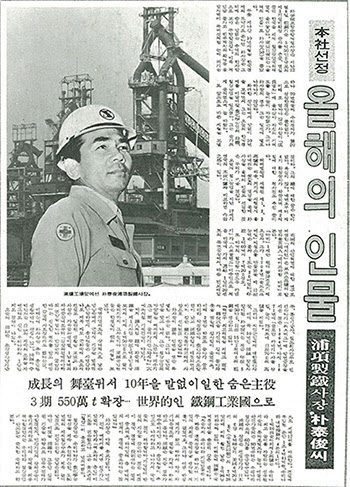
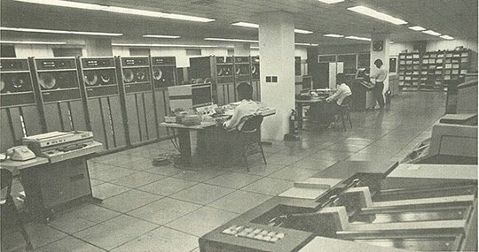

보도일 2015-04-20출처 조선일보 프리미엄조선 연재
<①편에서 계속>
3기 종합준공식이 끝난 1978년 세모, 일본기술단이 보따리를 꾸려 본국으로 돌아가게 되었다. 제철기술의 식민지를 극복하기 위해 해외연수와 기술개발에 과감히 투자해온 포스코가 기술독립의 기반을 다진 것이었다. 앞으로는 그 위에서 세계 최고 기술을 확보한다는 더 큰 목표를 향해 나아가야 했다. 10년 가까이 영일만에 머물렀던 일본기술단이 석별의 글을 남겼다.
<모든 역경을 딛고 포항제철은 단기간에 일본의 제철소에 버금가는 대규모의 선진제철소를 건설하는 데 성공했다. 이 회사가 4기 확장을 마칠 때면 아마도 생산능력과 시설 면에서 세계 최고가 될 것이다. 포항제철의 잠재능력은 경영정보시스템, 연수원, 정비관리센터 등 독창적인 조직에 기인한다. 고급인력과 최고경영자의 탁월한 경영능력이 합쳐져 포항제철은 머지않아 세계 최고가 될 것이다.>
단순한 덕담이 아니었다. 실상 그대로였다. 3기 종합준공을 둘러본 박정희가 박태준에게 ‘특별한 보상’을 내렸다. 그동안 너무 많이 독수공방시킨 아내를 위로하는 뜻에서라도 한 달 간 세계여행을 다녀오라는 것. 하지만 박태준은 휴가를 다 받을 수가 없었다. 사원들의 고생도 참 많았기에 대폭 사양할 수밖에 없었다.
1978년을 고작 이틀 남긴 날. 포스코의 사무실과 현장에서 박수와 환호성이 터졌다. 《동아일보》가 ‘올해의 인물’로 ‘포항제철 박태준 사장’을 선정한 것이었다. 사원들은 송년회에서 외칠 멋진 말을 챙길 수 있었다.
“철에 미친 우리 사장님이야말로 진짜 애국자다. 우리 사장님의 영광과 포항제철의 무궁한 발전을 위하여!”

1978년 12월 29일《동아일보》는 1면 한복판에 다음과 같이 박태준을 ‘올해의 인물’로 선정한 이유를 밝혔다.
<마치 철인(鐵人)처럼 철(鐵)에 파묻혀 포철을 제1기 사업 연산 103만 톤 규모에서 이제 550만 톤으로 끌어올리기까지 그 자신이나 포철 종업원들은 한결같이 한의 세월을 보냈다. 지나간 10년 세월을 한국경제의 도약기로 본다면, 박 사장은 그 뒤에 숨은 말없는 주역의 한 사람으로 보아 무방할 것 같다.
비록 저임금, 물가고, 빈부격차의 확대 등 응달지역이 독버섯처럼 눈에 띄기는 하나, 70년대 들어 우리 경제가 양적으로 성장한 것만은 틀림없다. 이때 또 얼마나 많은 사람들이 ‘성장열차’에 올라앉아 자신의 기여도를 자랑했는가. 그러나 박 사장의 경우 일선에 별로 나타나지 않았다. 그는 화려한 장막 뒤에서 말없이 10년을 보내면서 오늘의 한국경제를 이끌어갈 중화학 공장의 모체인 철강공업을 일으켰다.
그는 숨가쁘게 움직였으며 늘 바빴다.>
위의 글에는 나타나지 않은 포스코의 중요한 공적 하나를 더 기억해야 한다. 그것은 ‘전산화’다. 1978년의 한국사회나 한국기업에는 ‘전산화’가 낯선 단어였다. 그것을 체계적으로 도입하고 정착시킨 선구자가 포스코였다. 1950년대부터 일본 제철회사들은 일본을 경제대국으로 끌어올리는 견인차 역할을 했다. ‘산업의 쌀’을 안정적으로 공급했을 뿐 아니라, 뛰어난 정보기술을 산업계에 전파한 공로도 컸다.
종합제철소는 다른 제조업과 달리 복잡하고 다양한 과정을 일관공정 체계로 관리하기 때문에 전산화 도입이 빨라진 업종이다. 포스코도 초창기부터 전산화에 깊은 관심과 노력을 기울였다. 설비자동화의 필수기술인 자동제어 시스템을 비롯해 공정계획, 작업지시, 품질관리, 인력관리, 조직관리, 매출관리 등 회사의 모든 신경을 컴퓨터에 집대성한다는 목표를 세우고 있었다.

일본 제철회사들이 ‘철과 전산화’로 일본경제에 기여했듯, 포스코는 국내 제조업체에 ‘산업의 쌀’을 공급함으로써 산업발전의 견인차 역할을 하고 FA, OA, 통신 등 전산화의 첨단시스템을 선구적으로 도입하고 적용하여 이 땅에 정착시키는 데 앞장섰다.